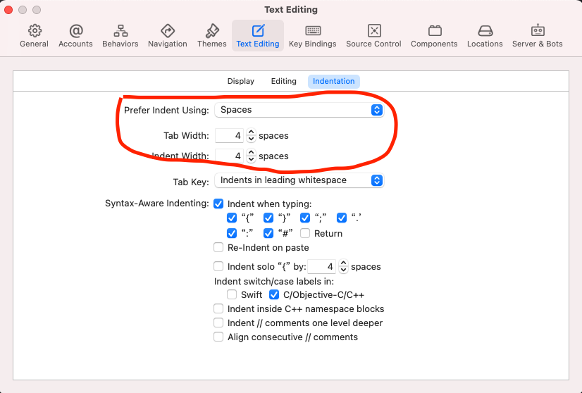
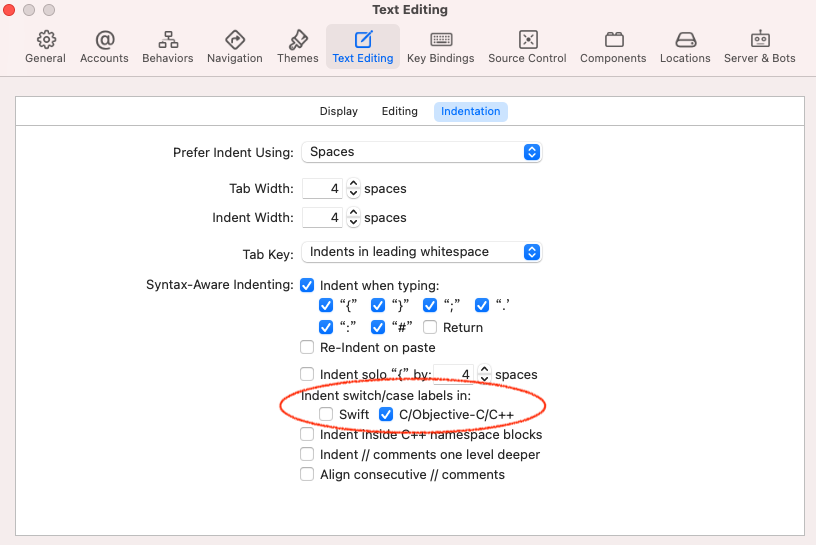

Swift 编码规范
源文件的基础要求
文件名
所有 Swift 源文件以扩展名 .swift 结尾。
禁止使用拼音或拼音缩写命名文件和变量。
通常来说，源文件的名字最好描述包含的主要内容。如果文件主要包含单个类型，则用类型名命名文件。如果文件是为已存在类型添加新的协议遵循，则命名为类名和协议名的组合，通过加号（+）连接。对于更复杂的情况，最好由你自己判断。
例如，
- 文件中包含单个类型
MyType，命名为MyType.swift。 - 文件中包含类型
MyType和一些顶层的工具函数，也命名为MyType.swift。（顶层的工具函数不是主要的内容。） - 文件中包含单个扩展，为类型
MyType添加MyProtocol协议遵循，命名为MyType+MyProtocol.swift。 - 文件中包含多个扩展，为类型
MyType添加协议遵循、嵌套类型或者其他功能的拓展，可以使用更通用的命名，只要它的前缀是MyType+；例如，MyType+Additions.swift。 - 文件中包含多个在公共类型或命名空间下没有作用域限制的相关声明（比如一系列全局的数学函数），可以命名得更有描述性。例如：
Math.swift。
文件编码
源文件以 UTF-8 方式编码。
空白符
除了行终止符之外，Unicode 水平空格符（U+0020）是唯一可以出现在源文件里的空白符。这意味着：
- 字符串或者字符字面量里的所有其他空白符，要用对应的转义字符表示。
- 制表符不用于缩进。缩进使用4个水平空格符
- xcode 设置缩进样式： 
特殊转义字符
任何字符中如果包含了特殊转义字符（\t、\n、\r、\"、\'、\\ 和 \0），直接使用该转义字符，不用其等价的 Unicode 转义字符（例如：\u{000a}）。
源文件结构
文件注释
描述源文件内容的注释是可选的。对只包含了单一抽象（例如一个类的声明）的文件并不建议用这种注释——这种情况下，抽象本身的文档注释就足够了，文件注释只有当提供了额外的有用信息时才需要。如果文件中包含多个抽象，可以添加文件注释，对整体内容进行解释。
导入语句
源文件中应该显式导入需要的顶层模块；不要多也不要少。如果源文件中同时使用了 UIKit
中的定义和 Foundation 中的定义，那么都进行显式导入；即使有些 Apple
框架已经在实现细节中导入其他框架。
优先考虑导入整个模块，而非导入单个声明或者子模块。
避免导入单个成员的原因如下：
- 没有自动化工具来解决/组织那些导入。
- 现存地自动化工具（例如 Xcode 迁移器）很可能无法处理导入单个成员的代码，因为这不是常见用法。
- 目前流行的 Swift 代码风格（基于官方例子和社区代码）都是导入整个模块。
如果导入完整模块的顶层定义（例如 C 接口）会污染全局命名空间，那导入单个声明是允许的。在这些情况下，由你自己判断应该如何导入。
如果子模块的导出功能在只导入顶层模块时不可用，那么允许导入子模块。例如：UIKit.UIGestureRecognizerSubclass 必须要显式导入，以暴露继承
UIGestureRecognizer 时代码允许重写的方法——这在只导入 UIKit 时并不可见。
导入语句不可换行。
在源文件中，导入语句放在除了注释以外的最前面。按以下方式分组，每组中的导入按照字母顺序排序，每组之间只有一个空行：
-
无测试模块/子模块的导入
-
单个声明的导入 (
class、enum、func、struct、var) -
@testable模块的导入（只存在测试源码中）
import CoreLocation
import MyThirdPartyModule
import SpriteKit
import UIKit
import func Darwin.C.isatty
@testable import MyModuleUnderTest
类型，变量和函数声明
通常情况下，大部分源文件只包含一个顶层类型，特别是类型声明很庞大时。除非在同一文件里包含多个相关类型是有意义的。例如，
-
类和它的代理协议可以定义在同一文件中。
-
类型和它相关的轻量帮助类型可以定义在同一文件中。这种时候需要使用
fileprivate将类型和/或它帮助类的某些功能限制在那个文件中而非暴露给模块的其他地方。
在源文件中类型、变量和函数之间的顺序，和该类型成员的顺序，都会大大影响可读性。然而，如何组织它们并没有单一正确的法则；不同的文件和不同的类型可以用不同的方式组织它们内容的排序。
重要的是，每一个文件和类型使用同一排序逻辑 ，并且维护者应该可以解释清楚这个逻辑。例如，新的方法不能习惯性地加在类型的最后面，因为这只是顺从“日期递增地时间排序”，而不是有逻辑性的排序。
当决定成员的排序逻辑后，使用 // MARK:
注释对该分组提供描述，对阅读者和将来的编码者（包括你自己）是很有帮助的。这种注释也会被 Xcode 理解并在源码窗口的导航栏中提供书签。（类似的还有 // MARK: -，在描述之前使用一个连字符的话， Xcode
会在菜单元素前插入一条分隔线。）例如，
class MovieRatingViewController: UITableViewController {
// MARK: - View controller lifecycle methods
override func viewDidLoad() {
// ...
}
override func viewWillAppear(_ animated: Bool) {
// ...
}
// MARK: - Movie rating manipulation methods
@objc private func ratingStarWasTapped(_ sender: UIButton?) {
// ...
}
@objc private func criticReviewWasTapped(_ sender: UIButton?) {
// ...
}
}
声明重载
当一个类型有多个构造器或者下标，或者一个文件/类型内有多个相同名字的函数（尽管可能有不同的实参标签），并且当这些重载在同一类型或者扩展作用域内时，它们应该按顺序排列，不应该在中间插入其他代码。
扩展
扩展可以将一个类型的功能组织到多个“单元”中。配合成员排序和所选择的组织结构/分组，会对代码可读性有很大的帮助；你必须使用某种能给审查者解释的逻辑结构进行组织。
常规格式
单行字符限制
Swift 代码有 100 字符单行限制。除了下面的说明之外，任何超过该限制的行都需要换行，详情见 换行。
例外：
-
即便是遵循单行字符限制的行，也不应该破坏文本中有意义的部分（例如，注释里的长 URL ）。
-
import语句。 -
其他工具生成的代码。
花括号
通常来说，内容非空的花括号遵循 Kernighan 和 Ritchie（K&R）代码风格，除了 Swift 特殊结构和规则以外：
-
左花括号（
{）之前不需要换行，除非是为了满足 换行 规则。 -
左花括号（
{）之后需要换行，除非满足下面的条件-
在闭包中，如果长度足够，将闭包的签名和花括号在同一行，在
in关键字后面换行。 -
可以省略成 单行语句。
-
空白块应该写作
{}。
-
-
右花括号（
}）之前需要换行，除非可以省略成 单行语句 或是空白块。 -
右花括号（
}）之后需要换行的情况，有且仅当该花括号用作终止语句或者作为声明体。例如，else块写成} else {时两个花括号在同一行。
分号
分号（;）禁止使用，无论是用于终止或者分割语句。
换而言之，分号只可能出现在字符串字面量或者注释中。
func printSum(_ a: Int, _ b: Int) {
let sum = a + b
print(sum)
}
func printSum(_ a: Int, _ b: Int) {
let sum = a + b;
print(sum);
}
每行一个语句
每行最多一个语句，每个语句后换行，除非该行结尾的块中只有 0 或者 1 条语句。
guard let value = value else { return 0 }
defer { file.close() }
switch someEnum {
case .first: return 5
case .second: return 10
case .third: return 20
}
let squares = numbers.map { $0 * $0 }
var someProperty: Int {
get { return otherObject.property }
set { otherObject.property = newValue }
}
var someProperty: Int { return otherObject.somethingElse() }
required init?(coder aDecoder: NSCoder) { fatalError("no coder") }
将块里包含的单个语句和块放在同一行总是允许的。由你自己判断是否将条件语句和它的执行体放在同一行中。例如，单行条件适合跟提前返回并进行简单收尾的代码放在一行，但是当执行体里包含了函数调用或者重要的逻辑就不太合适。如果不确定哪种更好，使用多行语句。
换行
术语说明：换行是将代码分割到多个行的行为，否则它们都会堆积到同一行。
函数声明
多个参数
public func index<Elements: Collection, Element>(
of element: Element,
in collection: Elements
) -> Elements.Index? where Elements.Element == Element, Element: Equatable {
for current in elements {
// ...
}
}
协议里以右括号（)）结束的函数声明可以将括号和最后的实参放在同一行或者另起一行。
public protocol ContrivedExampleDelegate {
func contrivedExample(
_ contrivedExample: ContrivedExample,
willDoSomethingTo someValue: SomeValue)
}
用 typealias 或其他手段简化复杂声明通常是更好的解决方法。
函数调用
当函数调用需要换行时，每一个实参单独一行，并在原始行缩进基础上 +2。
和函数声明一样，如果函数调用的语句以右括号（)）结束（意味着没有尾随闭包），括号既可以和最后一个实参在同一行也可以另起一行。
let index = index(
of: veryLongElementVariableName,
in: aCollectionOfElementsThatAlsoHappensToHaveALongName)
如果函数调用以尾随闭包结束，并且闭包签名需要换行的话，另起一行并将实参列表包在括号中以便和下面的闭包体区分。
someAsynchronousAction.execute(withDelay: howManySeconds, context: actionContext) {
(context, completion) in
doSomething(withContext: context)
completion()
}
控制流语句
当控制流语句（例如 if、gurad、while 或者 for）需要换行时，首个后续行的缩进和紧接着控制流关键字的元素保持一致。其余的后续行如果是语法上平级的元素，那么缩进也保持一致。
控制流语句执行体前面的左花括号（{），既可以和最后的条件同一行，也可以另起一行并和该语句缩进保持一致。对于 guard 语句，else { 必须连在一起，不管是在同一行还是另起一行。
if aBooleanValueReturnedByAVeryLongOptionalThing() &&
aDifferentBooleanValueReturnedByAVeryLongOptionalThing() &&
yetAnotherBooleanValueThatContributesToTheWrapping() {
doSomething()
}
if aBooleanValueReturnedByAVeryLongOptionalThing() &&
aDifferentBooleanValueReturnedByAVeryLongOptionalThing() &&
yetAnotherBooleanValueThatContributesToTheWrapping()
{
doSomething()
}
if let value = aValueReturnedByAVeryLongOptionalThing(),
let value2 = aDifferentValueReturnedByAVeryLongOptionalThing() {
doSomething()
}
if let value = aValueReturnedByAVeryLongOptionalThing(),
let value2 = aDifferentValueReturnedByAVeryLongOptionalThingThatForcesTheBraceToBeWrapped()
{
doSomething()
}
guard let value = aValueReturnedByAVeryLongOptionalThing(),
let value2 = aDifferentValueReturnedByAVeryLongOptionalThing() else {
doSomething()
}
guard let value = aValueReturnedByAVeryLongOptionalThing(),
let value2 = aDifferentValueReturnedByAVeryLongOptionalThing()
else {
doSomething()
}
for element in collection
where element.happensToHaveAVeryLongPropertyNameThatYouNeedToCheck {
doSomething()
}
水平空格
术语说明：在这个章节，_水平空格_指的是_内部_空格。这些规则不适用于行开始时需要或禁止的额外空格。
根据语言要求或其他代码风格的规则，除了字面量和注释外的单个 Unicode 空格只能在下面这些情况出现：
-
条件或 switch 语句（例如
if、guard、while或者switch）开始的任何保留关键字要和它之后的表达式分隔开，如果该表达式以左括号（(）开始。if (x == 0 && y == 0) || z == 0 { // ... }if(x == 0 && y == 0) || z == 0 { // ... } -
在同一行代码后面的右花括号（
}）之前，任何左花括号（{）之前，后续代码在同一行的左花括号（{）之后。let nonNegativeCubes = numbers.map { $0 * $0 * $0 }.filter { $0 >= 0 }let nonNegativeCubes = numbers.map { $0 * $0 * $0 } .filter { $0 >= 0 } let nonNegativeCubes = numbers.map{$0 * $0 * $0}.filter{$0 >= 0} -
在二元或者三元运算符的每一侧，包括下面描述的“类运算符”，除了最后的例外：
-
=运算符用在赋值，变量/属性的构造过程以及函数里的默认实参时。var x = 5 func sum(_ numbers: [Int], initialValue: Int = 0) { // ... }var x=5 func sum(_ numbers: [Int], initialValue: Int=0) { // ... } -
And 符号（
&）用在协议组合类型时。func sayHappyBirthday(to person: NameProviding & AgeProviding) { // ... }func sayHappyBirthday(to person: NameProviding&AgeProviding) { // ... } -
运算符用在函数声明/实现时。
static func == (lhs: MyType, rhs: MyType) -> Bool { // ... }static func ==(lhs: MyType, rhs: MyType) -> Bool { // ... } -
箭头（
->）用在函数的返回类型之前时。func sum(_ numbers: [Int]) -> Int { // ... }func sum(_ numbers: [Int])->Int { // ... } -
例外：点（
.）用在引用值和类型成员时两侧都没有空格。let width = view.bounds.widthlet width = view . bounds . width -
例外：
..<或者…运算符用在范围表达式时两侧都没空格。for number in 1...5 { // ... } let substring = string[index..<string.endIndex]for number in 1 ... 5 { // ... } let substring = string[index ..< string.endIndex]
-
-
逗号（
,）用在形参列表和元组/数组/字典字面量时，在逗号后面而不是前面。let numbers = [1, 2, 3]let numbers = [1,2,3] let numbers = [1 ,2 ,3] let numbers = [1 , 2 , 3] -
如果是下列场景，加在冒号（
:）后面而不是前面-
父类/协议遵循列表和范型约束。
struct HashTable: Collection { // ... } struct AnyEquatable<Wrapped: Equatable>: Equatable { // ... }struct HashTable : Collection { // ... } struct AnyEquatable<Wrapped : Equatable> : Equatable { // ... } -
函数实参标签和元组元素标签。
let tuple: (x: Int, y: Int) func sum(_ numbers: [Int]) { // ... }let tuple: (x:Int, y:Int) let tuple: (x : Int, y : Int) func sum(_ numbers:[Int]) { // ... } func sum(_ numbers : [Int]) { // ... } -
变量/属性的类型显式声明。
let number: Int = 5let number:Int = 5 let number : Int = 5 -
字典类型缩写。
var nameAgeMap: [String: Int] = []var nameAgeMap: [String:Int] = [] var nameAgeMap: [String : Int] = [] -
字典字面量。
let nameAgeMap = ["Ed": 40, "Timmy": 9]let nameAgeMap = ["Ed":40, "Timmy":9] let nameAgeMap = ["Ed" : 40, "Timmy" : 9]
-
-
行尾注释的双斜杠（
//），双斜杠之前最少两个空格，之后只加一个空格。let initialFactor = 2 // Warm up the modulator.let initialFactor = 2 // Warm up the modulator. -
数组、字典或元组字面量定义，加在括号外面而不是里面。
let numbers = [1, 2, 3]let numbers = [ 1, 2, 3 ]
水平对齐
术语说明：水平对齐是一种约定，通过在代码中添加不同数量的空格，让某些元素直接显示在前面行中该类型的其他元素下面。
水平对齐是禁止的，除非是明确的表格数据，此时不对齐会降低可读性。其他情况下（例如，对 struct 或 class
里的存储属性声明的类型进行对齐）水平对齐会引起维护问题，因为在新的成员引入时其余所有的成员都需要重新对齐。
struct DataPoint {
var value: Int
var primaryColor: UIColor
}
struct DataPoint {
var value: Int
var primaryColor: UIColor
}
垂直空行
在这些情况下使用单独的空白行：
-
在类型中这些连续成员之间：属性、构造器、方法、枚举项、嵌套类型，除非：
如果两个连续的存储属性，或者两个枚举项可以写在一行中，那空白行就是可选的。这时候空白行可以用来对这些声明进行逻辑分组。
- 不适用于前面规则，但两个属性有强关联，那之间的空白行也是可选的。例如，一个私有的存储属性和它相关的公开计算属性。
-
如果用于分割代码，只在需要的时候使用，根据逻辑对代码进行分割。
-
类型的第一个成员之前，或者最后一个成员之后的空白行是可选的（不赞成也不反对）。
-
本文档中其他章节中明确要求的地方。
多个空白行是允许的，但不是必须的（不赞成）。如果使用多个连续的空白行，那么在你的代码里应该贯彻到底。
括号
if、guard、while 或 switch 关键字后面的顶层表达式不需要使用括号。
if x == 0 {
print("x is zero")
}
if (x == 0 || y == 1) && z == 2 {
print("...")
}
if (x == 0) {
print("x is zero")
}
if ((x == 0 || y == 1) && z == 2) {
print("...")
}
分组括号是可选的，只有当作者和审查者觉得没有也不会令代码容易误解，或者会让代码更容易阅读时才可以被省略。不要认为每个阅读者都能记得完整的 Swift 操作符优先级表格。
特定结构格式化
非文档注释
非文档注释总是用双斜杠进行格式化（//），不要使用 C 风格的块格式化（/* ... */）。
属性
局部变量尽量声明在接近首次使用的地方，（在合理的情况下）最小化作用域。
除了元组的解构，每个 let 或者 var 语句（无论是属性或者局部变量）只声明一个变量。
var a = 5
var b = 10
let (quotient, remainder) = divide(100, 9)
var a = 5, b = 10
Switch 语句
枚举项语句的缩进和它们的 switch 语句保持一致；枚举项块里的语句在该缩进基础上 +4 空格。
switch order {
case .ascending:
print("Ascending")
case .descending:
print("Descending")
case .same:
print("Same")
}
switch order {
case .ascending:
print("Ascending")
case .descending:
print("Descending")
case .same:
print("Same")
}
switch order {
case .ascending:
print("Ascending")
case .descending:
print("Descending")
case .same:
print("Same")
}
xcode 设置 Switch 语句样式：
枚举项
通常来说，一个 enum 里每行只有一个 case。逗号分隔形式只能在枚举项都没有关联值或者原始值时使用，所有枚举项都能从名字明确其含义而不需要额外的注释，就可以写在同一行。
public enum Token {
case comma
case semicolon
case identifier
}
public enum Token {
case comma, semicolon, identifier
}
public enum Token {
case comma
case semicolon
case identifier(String)
}public enum Token {
case comma, semicolon, identifier(String)
}
如果 enum 里所有枚举项都需要被声明为 indirect，那这个 enum 就声明为 indirect，单独枚举项前面的关键字可以省略。
public indirect enum DependencyGraphNode {
case userDefined(dependencies: [DependencyGraphNode])
case synthesized(dependencies: [DependencyGraphNode])
}public enum DependencyGraphNode {
indirect case userDefined(dependencies: [DependencyGraphNode])
indirect case synthesized(dependencies: [DependencyGraphNode])
}当 enum 的枚举项没有关联值时，不应该出现空的括号。
public enum BinaryTree<Element> {
indirect case node(element: Element, left: BinaryTree, right: BinaryTree)
case empty // 推荐
}public enum BinaryTree<Element> {
indirect case node(element: Element, left: BinaryTree, right: BinaryTree)
case empty() // 不推荐
}枚举项必须遵循一定的可解释排序逻辑。如果没有明显的排序逻辑，按照枚举项名字的首字母排序。
在下面的例子中，枚举项根据其表示的 HTTP 状态码数字进行排序，并通过空行进行分组。
public enum HTTPStatus: Int {
case ok = 200
case badRequest = 400
case notAuthorized = 401
case paymentRequired = 402
case forbidden = 403
case notFound = 404
case internalServerError = 500
}同样的枚举，下面这个版本的写法可读性就差一些。尽管枚举项根据字母排序，但是却失去了对关联值含义的表达。
public enum HTTPStatus: Int {
case badRequest = 400
case forbidden = 403
case internalServerError = 500
case notAuthorized = 401
case notFound = 404
case ok = 200
case paymentRequired = 402
}末尾逗号
当数组和字典里字面量里每个元素独占一行时，需要加上末尾逗号。在这些字面量后续加入新的元素时，会有更明显的区分。
let configurationKeys = [
"bufferSize",
"compression",
"encoding", // 推荐
]let configurationKeys = [
"bufferSize",
"compression",
"encoding" // 不推荐
]注解
每个带参数的注解（例如 @availability(…) 或 @objc(…)）写在其适用声明的前面单独一行，按照首字母排序，缩进和声明保持一致。
@available(iOS 9.0, *)
public func coolNewFeature() {
// ...
}@available(iOS 9.0, *) public func coolNewFeature() {
// ...
}不带参数的注解（例如不带参数的 @objc、@IBOutlet 或者 @NSManaged）当且仅当不导致换行时，可以按首字母排序与声明写在同一行。如果在声明的行增加该注解后导致需要换行的话，则将注解另起一行。
public class MyViewController: UIViewController {
@IBOutlet private var tableView: UITableView!
}命名
Apple API 代码风格指南
Apple 官方的 Swift 命名和 API 代码风格指南 也是本文档的一部分，同样需要遵循，这里不再重复其内容。
译者注：这份文档的中文版是 SwiftGG 的长期维护项目之一，可以在 这里 阅读。
使用访问控制
使用 Swift 自带的访问控制（internal、fileprivate 或 private）来达到隐藏信息的目的，不要使用命名约定（例如下划线前缀）。
命名约定（例如下划线前缀）只有在声明必须用到更高的可见性来解决语言限制的罕见情况下使用——例如，类型A有一个子类需要被跨模块使用，导致此类型必须被声明为 public，但是类型A又不想被模块外使用。
构造器
为了代码可读性，构造器实参和其直接对应的存储属性同名。在赋值的时候使用显式 self.
来消除歧义。
public struct Person {
public let name: String
public let phoneNumber: String
// 推荐
public init(name: String, phoneNumber: String) {
self.name = name
self.phoneNumber = phoneNumber
}
}public struct Person {
public let name: String
public let phoneNumber: String
// 不推荐
public init(name otherName: String, phoneNumber otherPhoneNumber: String) {
name = otherName
phoneNumber = otherPhoneNumber
}
}静态属性和类属性
静态属性和类属性返回声明类型的实例时，不需要加上该类型名字作后缀。
public class UIColor {
public class var red: UIColor { // 推荐
// ...
}
}
public class URLSession {
public class var shared: URLSession { // 推荐
// ...
}
}public class UIColor {
public class var redColor: UIColor { // 不推荐
// ...
}
}
public class URLSession {
public class var sharedSession: URLSession { // 不推荐
// ...
}
}如果静态属性或者类属性用于描述该声明类型的单例实例，通常使用 shared 和 default 作为名字。本指南不强制要求使用这些命名，作者可以自行选择对该类型有意义的名字。
全局常量
和其他变量类似，全局常量也使用 lowerCamelCase（驼峰命名法）。不要使用匈牙利命名法，例如以 g 或者 k 开头。
let secondsPerMinute = 60
let SecondsPerMinute = 60
let kSecondsPerMinute = 60
let gSecondsPerMinute = 60
let SECONDS_PER_MINUTE = 60
代理方法
受 Cocoa 框架里协议的命名启发，代理协议和类似代理的协议（例如数据源协议）里的方法命名，使用下面描述的口语化语法。
术语“代理源对象”指的是响应代理方法的对象。例如：
UITableView是响应视图delegate属性设置的UITableViewDeleagte里方法的源对象。
所有方法将代理源对象作为第一个实参。
对于只有代理源对象实参的方法：
-
如果方法返回
void（例如用于提醒代理事件发生），那么方法名为代理源类型后面加上描述事件的指示性动词。实参无标签。func scrollViewDidBeginScrolling(_ scrollView: UIScrollView) -
如果方法返回
Bool（例如对代理源对象本身做断言），那么方法名为代理源类型后面加上描述断言的指示性或条件性动词。实参无标签。func scrollViewShouldScrollToTop(_ scrollView: UIScrollView) -> Bool -
如果方法返回其他值（例如查询代理源对象上的属性信息），那么方法名是描述查询属性的名词。实参标签是介词或后置介词，用于将名词和代理源对象合适地连接起来。
func numberOfSections(in scrollView: UIScrollView) -> Int
对于在代理源对象后有额外实参的方法，方法名是代理源类型自身并且第一个实参无标签。然后：
-
如果方法返回
void，第二个实参标签是指示性动词，用于描述实参是直接宾语或者间接宾语的事件，并给其它实参（如果有的话）提供更多上下文。func tableView( _ tableView: UITableView, willDisplayCell cell: UITableViewCell, forRowAt indexPath: IndexPath) -
如果方法返回
Bool，第二个实参标签是指示性或者条件性动词，用于描述对于实参的返回值，并给其他实参（如果有的话）提供更多上下文。func tableView( _ tableView: UITableView, shouldSpringLoadRowAt indexPath: IndexPath, with context: UISpringLoadedInteractionContext ) -> Bool -
如果方法返回其他值，第二个实参标签是名词和后置介词，用于描述对于实参的返回值，并给其他实参（如果有的话）提供更多上下文。
func tableView( _ tableView: UITableView, heightForRowAt indexPath: IndexPath ) -> CGFloat
Apple 的 代理和数据源 文档也提供了一些在这种情况下的通用命名指引。
编程实践
本章节中规则的通用主旨是：避免冗余，避免歧义，除了能明显提高可读性和/或减少歧义外，尽量使用隐式而不是显式。
编译器警告
代码在编译时尽可能保持没有警告。在作者力所能及的范围内去除警告。
如果不能马上迁移到替代 API，或者在 API 对外部用户废弃但还需要继续对库内部支持时，有理由的废弃警告可以保留。
构造器
对于 Struct，Swift 会合成实参为 var 属性和缺少默认值的 let 属性的非公开逐一成员 init。如果该构造器已经足够（也就是说不需要 public），直接使用，不需要写显式的构造器。
永远不要直接调用遵循特殊 ExpressibleBy*Literal 编译器协议的构造器。
struct Kilometers: ExpressibleByIntegerLiteral {
init(integerLiteral value: Int) {
// ...
}
}
let k1: Kilometers = 10 // 推荐
let k2 = 10 as Kilometers // 推荐
struct Kilometers: ExpressibleByIntegerLiteral {
init(integerLiteral value: Int) {
// ...
}
}
let k = Kilometers(integerLiteral: 10) // 不推荐
只有当调用者是元类型变量时才允许明确调用 .init(...)。使用字面量类型名字直接调用构造器时，省略 .init。（构造器使用 MyType.init 语法作为闭包进行引用是允许的。）
let x = MyType(arguments)
let type = lookupType(context)
let x = type.init(arguments)
let x = makeValue(factory: MyType.init)
let x = MyType.init(arguments)
属性
只读计算属性的 get 块可以省略，将执行体直接嵌套在属性声明里。
var totalCost: Int {
return items.sum { $0.cost }
}var totalCost: Int {
get {
return items.sum { $0.cost }
}
}
类型简称
数组、字典和可选类型尽可能使用简写形式，也就是 [Element]，[Key: Value] 和 Wrapped?。完整形式 Array<Element>，Dictionary<Key, Value> 和 Optional<Wrapped> 只有在编译器需要时才使用，例如 Swift
语法分析程序不接受 [Element].Index 而需要用 Array<Element>.Index。
func enumeratedDictionary<Element>(
from values: [Element],
start: Array<Element>.Index? = nil
) -> [Int: Element] {
// ...
}
func enumeratedDictionary<Element>(
from values: Array<Element>,
start: Optional<Array<Element>.Index> = nil
) -> Dictionary<Int, Element> {
// ...
}
Void 是空元组 () 的 typealias，所以从实现来说它们是等价的。在函数类型声明（例如闭包或者持有函数引用变量）的返回类型永远写作
void，而不用 ()。在用 func 关键字声明的函数中，全都省略 void 返回类型。
空的实参列表永远写作 ()，而不是 Void。（事实上，Void -> Result 的函数签名在 Swift 里会报错，因为函数实参必须用括号包围，而 (void)有着其他含义：单个空元组实参的实参列表。）
func doSomething() {
// ...
}
let callback: () -> Void
func doSomething() -> Void {
// ...
}
func doSomething2() -> () {
// ...
}
let callback: () -> ()
可选类型
在设计算法时避免哨兵值（例如 index 是 -1
表示集合里找不到某个元素）。哨兵值容易被偶然传递到其它逻辑层，因为类型系统没办法将它们和合法结果进行区分。
Optional
用于传递一个非错误的结果，要不有值，要不没有值。例如：在集合中查询一个值时，值没有找到是一个合法并可预期的结果，而不是一个错误。
func index(of thing: Thing, in things: [Thing]) -> Int? {
// ...
}
if let index = index(of: thing, in: lotsOfThings) {
// 找到了
} else {
// 没找到
}
func index(of thing: Thing, in things: [Thing]) -> Int {
// ...
}
let index = index(of: thing, in: lotsOfThings)
if index != -1 {
// 找到了
} else {
// 没找到
}
Optional
也用于表示单一而明确失败的错误哨兵，也就是当操作是因为使用者明确的单个特定领域原因而失败时。（限制在特定领域，是为了排除那些用户明显无法正确处理的严重错误，例如内存不足错误。）
例如，如果字符串不能用适合类型位宽的合法整数表达，将字符串转换为整型可能会失败：
struct Int17 {
init?(_ string: String) {
// ...
}
}
如果要判断一个 Optional 非 nil 但不需要访问解包值，可以直接和 nil 进行比较。下面的例子能清晰地表达程序意图：
if value != nil {
print("value was not nil")
}
这个例子里，用到了 Swift 模式匹配和绑定语法，将值解包后又马上丢弃，这就会让人产生误解（译者注：程序的目的是判断有没有值，但是这种写法看起来并不直观，好像有其他意图）。
if let _ = value {
print("value was not nil")
}
强制解包和强制类型转换
强制解包和强制类型转换通常说明代码有问题，强烈不推荐。除非它能通过周围代码解释清楚该操作的安全性，并需要附加注释来描述这个操作是永远安全的。例如，
let value = getSomeInteger()
// ...无关代码...
// 这里的强制解包是安全的，会保证传入的 `value` 是合法的，因为它的数据源只提供这些合法枚举项
return SomeEnum(rawValue: value)!
例外：在单元测试和仅用于测试的代码里，允许使用没有注释的强制解包。这可以减少代码中不必要的控制流。在
nil被解包或者不合适的类型擦除发生时，测试也会按照预期而失败。
可选值隐式解包
可选值隐式解包本身是不安全的，尽可能使用非可选值声明，或者使用常规的 Optional
类型。下面是一些特殊情况。
存活时间基于 UI 生命周期而不是严格基于持有关系的用户界面元素，可以使用可选值显式解包。这种情况的例子包括连接 XIB 文件或 storyboard 中元素的 @IBOutlet 属性，外部初始化的属性（例如 view controller 调用的
prepareForSegue 实现），还有在类生命周期中初始化的属性（例如在 view
controller viewDidLoad
方法里初始化的视图）。这些属性如果用可选值，会加重使用者解包的负担，因为它们能确保非空，并且一旦初始化完毕就会一直有值。
class SomeViewController: UIViewController {
@IBOutlet var button: UIButton!
override func viewDidLoad() {
populateLabel(for: button)
}
private func populateLabel(for button: UIButton) {
// ...
}
}
访问等级
除 internal 外，其它访问等级在声明里不允许省略(比如：外面不使用的声明必须显示添加 private)。顶层声明的默认访问等级是 internal。嵌套的声明默认访问等级和其外层声明访问等级相同，但不能高于 internal 。
给文件级别的扩展指定显式访问等级是不允许的。拓展里的每一个成员如果不采用默认的访问等级，则应该单独进行指定。
extension String {
public var isUppercase: Bool {
// ...
}
public var isLowercase: Bool {
// ...
}
}
public extension String {
var isUppercase: Bool {
// ...
}
var isLowercase: Bool {
// ...
}
}
嵌套和命名空间
Swift 里允许嵌套 enum、struct 和 class，嵌套更适合（比起命名约定）表示作用域和类型之间的分级关系，因此推荐使用。例如，把类型相关的
enum 或者错误类型放到这个类型内部。
class Parser {
enum Error: Swift.Error {
case invalidToken(String)
case unexpectedEOF
}
func parse(text: String) throws {
// ...
}
}
class Parser {
func parse(text: String) throws {
// ...
}
}
enum ParseError: Error {
case invalidToken(String)
case unexpectedEOF
}Swift 目前还不支持在其它类型中嵌套协议，反之亦然，所以该规则不适用于某些情况，例如控制器类型和它的代理协议。
如果要定一个“命名空间”来对互相关联的声明（例如常量或者帮助方法）就行分组，公认的做法是声明一个没有枚举项的 enum。该 enum 自然不存在实例，并且不需要额外的样板代码来避免被实例化。
enum Dimensions {
static let tileMargin: CGFloat = 8
static let tilePadding: CGFloat = 4
static let tileContentSize: CGSize(width: 80, height: 64)
}
struct Dimensions {
private init() {}
static let tileMargin: CGFloat = 8
static let tilePadding: CGFloat = 4
static let tileContentSize: CGSize(width: 80, height: 64)
}
提前退出的 guard
guard 语句，比起条件相反的 if 语句，会更好地从视觉上强调，该检查条件会导致从当前作用域提前退出。
更远了说，guard
语句通过减少额外嵌套层级（“鞭尸金字塔”）来提高可读性；令错误情况和触发条件靠近，而主逻辑在作用域里保持向左对齐。
下面的例子中会体现这些理论；第一种例子里，有清晰的流程，检查不合法的状态并退出，然后在成功的情况下执行主逻辑。在没有 guard
的第二个例子里，主逻辑混杂在某个任意嵌套层级里，抛出的错误和它们的触发条件被分隔得很开。
func discombobulate(_ values: [Int]) throws -> Int {
guard let first = values.first else {
throw DiscombobulationError.arrayWasEmpty
}
guard first >= 0 else {
throw DiscombobulationError.negativeEnergy
}
var result = 0
for value in values {
result += invertedCombobulatoryFactory(of: value)
}
return result
}
func discombobulate(_ values: [Int]) throws -> Int {
if let first = values.first {
if first >= 0 {
var result = 0
for value in values {
result += invertedCombobulatoryFactor(of: value)
}
return result
} else {
throw DiscombobulationError.negativeEnergy
}
} else {
throw DiscombobulationError.arrayWasEmpty
}
}在循环语句中，guard-continue 语句也可以避免增加缩进，比如整个循环体只在某些情况下执行（不过要结合下面的
for-where 规范）。
在 switch 语句里的
fallthrough
当 switch 里的多个 case 执行同样的语句时，这些 case 可以合并成一个范围或者逗号分隔的列表。声明多个 case 却不做任何事，只是 fallthrough 到后面的 case 是不允许的。
switch value {
case 1: print("one")
case 2...4: print("two to four")
case 5, 7: print("five or seven")
default: break
}
switch value {case 1: print("one")
case 2: fallthrough
case 3: fallthrough
case 4: print("two to four")
case 5: fallthrough
case 7: print("five or seven")
default: break
}
数字和字符串字面量
Swift 里的整型和字符串字面量没有固定类型。例如，5 本身不是一个 Int；它能表示遵循 ExpressibleByIntegerLiteral
的任何类型，只有类型推断无法找到更明确的类型时，才会变成 Int。类似的，字面量 "x" 并不是 String、Character 或 UnicodeScalar，不过它可以根据上下文变成这些类型，默认情况是变成 String。
因此类型在使用默认以外的字面量方式构造值，并且该类型不能通过上下文推断更多信息时，需要在声明里用显式类型，或者用 as 表达式来进行强制转换。
// 没有更明确的类型，x1 会被推断为 Int 类型。
let x1 = 50
// 这些是明确的 Int32 类型。
let x2: Int32 = 50
let x3 = 50 as Int32
// 没有更明确的类型，y1 会被推断为 String 类型。
let y1 = "a"
// 这些是明确的 Character 类型。
let y2: Character = "a"
let y3 = "a" as Character
// 这些是明确的 UnicodeScalar 类型。
let y4: UnicodeScalar = "a"
let y5 = "a" as UnicodeScalar
func writeByte(_ byte: UInt8) {
// ...
}
// 函数实参也可以推断，所以 50 是 UInt 但不需要强制明确。
writeByte(50)
如果字面量的强制转换不合理，编译器会抛出对应的错误，例如，将不是整数的数字转换成整数，或者将一个字符串转换成字符。所以下面例子抛出错误是“好”事，因为这些错误在编译期就找到了正确的原因。
// 错误：整型字面量 ‘9223372036854775808’ 存储为 ‘Int64’ 里会溢出
let a = 0x8000_0000_0000_0000 as Int64
// 错误：无法将“String”类型的值强制转换为“Character”
let b = "ab" as Character
如果使用构造器语法对这些类型进行强制转换，会产生易误导的编译器错误，也可能更糟，产生难调试的运行时错误。
// 这里首先尝试通过字面量创建一个 `Int`(有符号的)，然后转换为 `UInt64`。尽管这个字面量能存入 `UInt64`，
// 但它在第一步无法存入 `Int`，所以这里无法通过编译。
let a1 = UInt64(0x8000_0000_0000_0000)
// 这里调用 `Character.init(_: String)`，因此会在运行时创建一个 `String` 的“a”（会涉及到耗时的堆分配），
// 从中提取字符，然后再释放掉它。这比恰当的强制指定耗时明显。
let b = Character("a")
// 和上面类似，这里会创建一个 `String` 并且使用 `Character.init(_: String)` 尝试从中提取单个字符。
// 这会因此先决条件在运行时发生错误。
let c = Character("ab")
Playground 字面量
禁止在非 playground 的代码中使用会进行图形渲染的 playground 字面量：#colorLiteral(...)、#imageLiteral(...) 和 #fileLiteral(...)。它们只允许出现在 playground 源码里。
let color = UIColor(red: 1.0, green: 1.0, blue: 1.0, alpha: 1.0)
let color = #colorLiteral(red: 1.0, green: 1.0, blue: 1.0, alpha: 1.0)
定义新运算符
不理智地使用自定义运算符会显著影响代码可读性，因为比起标准库中更常用的运算符，这样的运算符缺乏共识，不容易被理解。
通常来说，应该避免定义自定义运算符。然而，当一个运算符在问题领域中有清晰和含义良好的定义，并且使用它会比函数调用显著提高代码的可读性时，可以使用。例如，* 在 Swift
里只定义为乘法运算符（不包含掩码版本）。数学矩阵库可能会定义额外的运算符来支持其他运算比如叉乘和点乘。
自定义 <~~ 和 ~~> 运算符来解码和编码 JSON 数据就是典型的禁止用法。这样的运算符不是 JSON
领域问题的原生处理方式，哪怕是有经验的 Swift 工程师，在没有运算符文档的情况下也可能会对这种处理代码有着不同的理解。
如果你必须使用第三方代码里的自定义运算符，那强烈建议你编写一个包装器，定义可读性更好的方法，作为该自定义运算符的代理。对团队新成员或者其他代码审查者来说，这会显著降低学习曲线，更快的理解代码原理。
重载现有运算符
原则上禁止重载现有运算符
文档注释
通常格式
文档注释使用每行前面三个斜杠（///）的格式。Java 文档风格的块状注释（/** ...*/）是不允许的。
/// Returns the numeric value of the given digit represented as a Unicode scalar.
///
/// - Parameters:
/// - digit: The Unicode scalar whose numeric value should be returned.
/// - radix: The radix, between 2 and 36, used to compute the numeric value.
/// - Returns: The numeric value of the scalar.
func numericValue(of digit: UnicodeScalar, radix: Int = 10) -> Int {
// ...
}
/**
* Returns the numeric value of the given digit represented as a Unicode scalar.
*
* - Parameters:
* - digit: The Unicode scalar whose numeric value should be returned.
* - radix: The radix, between 2 and 36, used to compute the numeric value.
* - Returns: The numeric value of the scalar.
*/
func numericValue(of digit: UnicodeScalar, radix: Int = 10) -> Int {
// ...
}
/**
Returns the numeric value of the given digit represented as a Unicode scalar.
- Parameters:
- digit: The Unicode scalar whose numeric value should be returned.
- radix: The radix, between 2 and 36, used to compute the numeric value.
- Returns: The numeric value of the scalar.
*/
func numericValue(of digit: UnicodeScalar, radix: Int = 10) -> Int {
// ...
}
一句话概括
文档注释的开始使用简短的一句话概括来描述声明。（这句话可以跨行，但如果跨了很多行，作者应该考虑是否可以将概况简化，并将细节移到新的段落中。）
如果概括需要陈述更多细节，在后面添加额外的段落（每个段落用空行分隔）。
一句话概括不需要是完整的句子；例如，方法的概括通常写作动词短语，不需要加上“这个方法 […]”，因为这就是要表达的，写出来是多余的。类似，属性通常写作名词短语，不需要加上“这个属性是 […]”。然而无论如何，它们还是要以句号结尾。
/// The background color of the view.
var backgroundColor: UIColor
/// Returns the sum of the numbers in the given array.
///
/// - Parameter numbers: The numbers to sum.
/// - Returns: The sum of the numbers.
func sum(_ numbers: [Int]) -> Int {
// ...
}
/// This property is the background color of the view.
var backgroundColor: UIColor
/// This method returns the sum of the numbers in the given array.
///
/// - Parameter numbers: The numbers to sum.
/// - Returns: The sum of the numbers.
func sum(_ numbers: [Int]) -> Int {
// ...
}
形参，返回值和抛出标签
Xcode 里编写文档注释的推荐方式是将文字光标放在声明上并且按下 Command + Option + /。这会自动创建有待填充占位符的正确格式注释。
Parameter(s)、Returns 和 Throws 标签后面跟着的内容需要以句号结尾，即使它们只是短语而不是完整的句子。
Apple 标记格式
强烈建议使用 Apple 标记格式 来添加富文本到文档中。这种标记有助于区分注释里的特征引用（例如形参名字）和描述性文本，并且可以被 Xcode 和其他文档生成工具渲染。下面列出一些常用指令的示例。
- 段落以
///开始的单一空白行分隔。 - 以*单星号*和_单下划线_包围的文本会被渲染成斜体/斜型。
- 以**双星号**和__双下划线__包围的文本会被渲染成粗体。
- 符号名或者内联代码以
`反引号`包围。 - 多行代码（例如作为用例）以三个反引号（
注释的位置
最起码，每个 open 或 public 声明和里面的每个 open 或 public 成员都应该有文档注释，除了下面的情况：
-
enum里单个的枚举项名字如果已经可以自解释，则通常不需要注释。有关联值的枚举项如果值的含义不明确，那么不管怎样都应该注释。 -
覆盖父类的声明、协议要求的实现或者提供协议要求的默认实现的扩展声明。
覆盖声明可以添加注释来描述新行为。但是任何情况下都不应该单纯拷贝基类的声明文档。
-
测试类和测试方法可以不需要文档注释。然而，注释对于在多个测试里复用的函数式测试类和帮助类/方法时是有帮助的。
-
扩展声明（也就是自身的
extension）可以不需要文档注释。如果能帮助明确拓展的用途，你可以选择添加，但避免无意义或者误导的注释。在下面的例子中，注释仅仅重复了源码显而易见的事：
/// Add `Equatable` conformance. extension MyType: Equatable { // ... }下面的例子更微妙一些，但这是一个注释无法拓展的例子，因为这个拓展或者类型一致性在以后可能会变化。这个
Comparable可能是在编写对该类型值的排序代码时加上的，但这不是一致性的唯一可能用途，并且使用者可能在以后其他用途代码里会依赖它。/// Make `Candidate` comparable so that they can be sorted. extension Candidate: Comparable { // ... }
通常来说，如果你发现你写的注释只是简单地重复源码中显而易见的事，并用类似”用于表示”的词语进行美化，那么将这些注释完全去掉。
但是，不要用这个例外来证明可以省略某些正常读者可能需要的相关信息。例如，对于 canonicalName 名字的属性，不要省略注释（只有合理的时候才可以只写 /// The canonical name.），因为正常读者可能不知道术语“规范名字”在上下文中的含义。
使用注释是定义该术语的好机会。